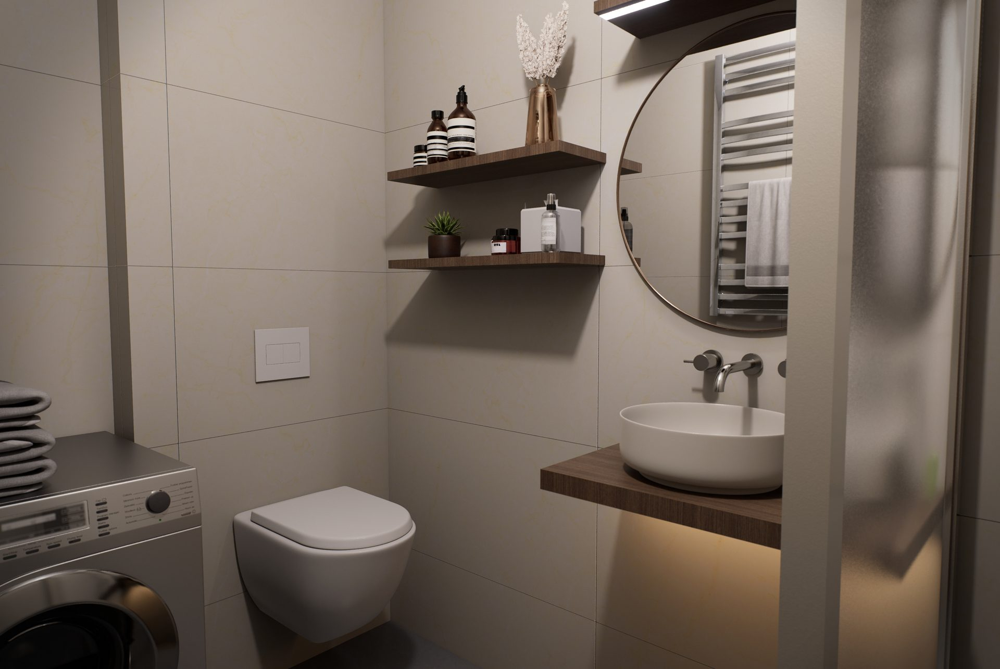

Kompaktní dvoupokojový byt orientovaný do ulice. Okna se dotýkají zachované zdobné fasády historického měšťanského domu. Vhodný pro dvojici i jako investiční nemovitost s vyšším nájemným potenciálem.
Vizualizace jsou typové — ilustrují materiálové a designové řešení projektu. Nezobrazují přesnou dispozici konkrétní jednotky. Nábytek, kuchyňská linka, svítidla a dekorace nejsou součástí dodávky, není-li ve standardu uvedeno jinak.
Byt 02 je kompaktní 2+kk v přízemí s okny do ulice — jen kousek od zachované zdobné fasády. Otevřený obývací pokoj s kuchyňským koutem (17,58 m²) propojuje denní život, samostatná ložnice nabízí klidné zázemí.
Vhodný pro pár, jednotlivce nebo jako investiční byt s potenciálem vyššího nájemného — přízemí v Husovicích je vhodné pro studenty a mladé profesionály i mladými profesionály.
| Obývací pokoj s kuchyňským koutem | 17,58 m² |
| Ložnice | 9,81 m² |
| Koupelna + WC | ~4 m² |
| Předsíň | ~5 m² |
| Celkem užitná plocha | 36,45 m² |
| Vytápění | Tepelné čerpadlo |
| Energetická třída | B (předpokládaná, finální PENB v procesu) |
| Konstrukce stěn | Cihelné tvarovky HELUZ |
| Zateplení | Minerální vata |
| Patro | 1.NP |
| Stav | K dispozici |
| Předání | Q3 2027 |

Všechny byty v Domě Netušil mají koupelny v jednotném standardu — kvalitní obklady, kvalitní sanita, baterie Hansgrohe. Možnost dovybavení dle individuálního výběru klienta.
Ozvete se nám pro rezervaci, prohlídku nebo individuální nabídku. Pro předplatitele (předplacení 50–70 % kupní ceny) je k dispozici výhodnější cena. Odpovídáme do 24 hodin.
{kind=link}